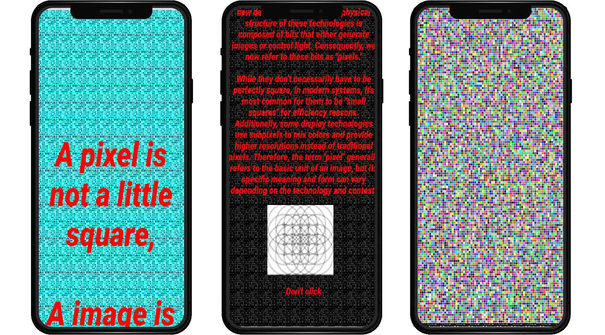
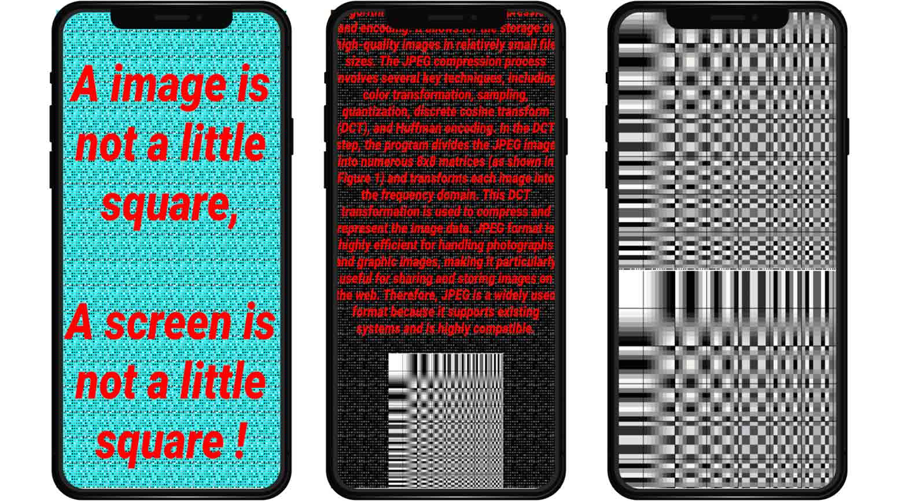
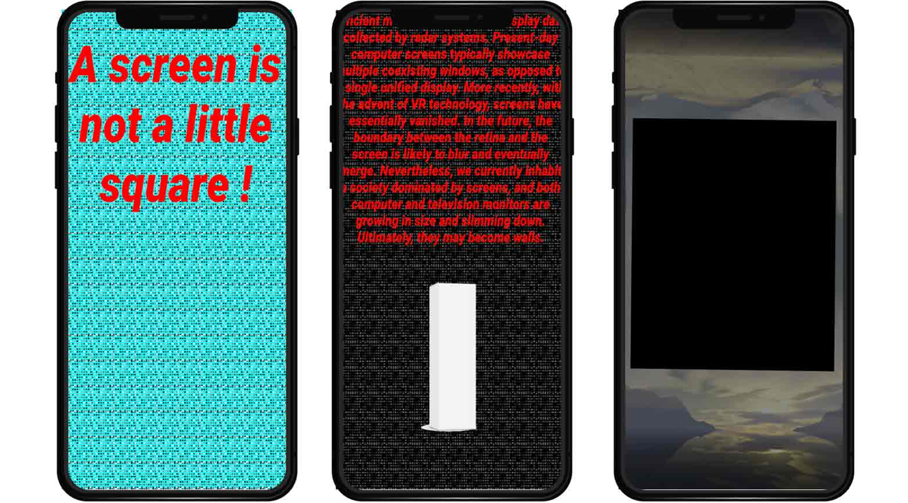

'Pixel is not a little square, Image is not a little square, Screen is not a little square!', WEB, 2023
Is the final destination for most physical works a little jpeg?
Physical works take on a different life by becoming digital images. Even after becoming a digital image, their life is not easy, but through various processes, they become the most efficient and lightweight body.
This work is about pixels, image formats, and screens. It is a research and experiment into what shape a pixel has, what compression process the image format takes, and what the screen looks like.
https://jiho6693.github.io/pixel/

1. Pixel
Pixel is not a little square.
It is a point sample of an image, essentially a point without dimensions and with no specific shape.
This concept of a "pixel" was created before technologies like fixed displays, such as LCDs, became widely used. But recent developments in display and digital image technologies have given rise to a new definition of "pixels." The physical structure of these technologies is composed of bits that either generate images or control light. Consequently, we now refer to these bits as "pixels." While they don't necessarily have to be perfectly square, in modern systems, it's most common for them to be "small squares" for efficiency reasons. Additionally, some display technologies use subpixels to mix colors and provide higher resolutions instead of traditional pixels. Therefore, the term "pixel" generally refers to the basic unit of an image, but its specific meaning and form can vary depending on the technology and context.

2. Digital image - jpeg
Due to the high data volume of digital images, digital files are often compressed due to issues of transmission speed and cost.
The compression methods for images are typically categorized into two types: lossless and lossy. In lossless compression, as the name suggests, the original information is not lost. Conversely, in lossy compression, data is sacrificed. Therefore, lossy compression is primarily used for images, music, and videos, where some loss of data is acceptable. Believe it or not, our eyes and ears are quite forgiving, and we often don't notice missing details.
One of the most notable formats for lossy compression is JPEG (Joint Photographic Experts Group). JPEG was invented in 1986 and has become a widely adopted standard algorithm for digital image compression and encoding. It allows for the storage of high-quality images in relatively small file sizes. The JPEG compression process involves several key techniques, including color transformation, sampling, quantization, discrete cosine transform (DCT), and Huffman encoding. In the DCT step, the program divides the JPEG image into numerous 8x8 matrices (as shown in Figure 1) and transforms each image into the frequency domain. This DCT transformation is used to compress and represent the image data. JPEG format is highly efficient for handling photographs and graphic images, making it particularly useful for sharing and storing images on the web. Therefore, JPEG is a widely used format because it supports existing systems and is highly compatible.

3. Digital body - Screen
Most digital images are presented through a medium known as a screen. The screen serves as a conduit, but it does not assume the physical form of the image. Traditionally, screens share an intriguing visual resemblance to paintings, featuring flat, rectangular surfaces. This rectangular shape comes with a frame and, while it exists within the space our bodies occupy, it acts as a window to another realm. The screen selectively filters, extracts, substitutes, and discards anything outside its frame. This dynamic began to shift with the emergence of smaller screens like TVs and computer monitors following the era of movie screens.
Computer screens initially had their roots in military applications, offering an efficient means to process and display data collected by radar systems. Present-day computer screens typically showcase multiple coexisting windows, as opposed to a single unified display. More recently, with the advent of VR technology, screens have essentially vanished. In the future, the boundary between the retina and the screen is likely to blur and eventually merge. Nevertheless, we currently inhabit a society dominated by screens, and both computer and television monitors are growing in size and slimming down. Ultimately, they may become walls.